Акцент бирюза #5fb8ae · PDF ночью: затемнение без инверсии · 390×844 · токены tokens.css · 1б — читалка, 1в — приложение
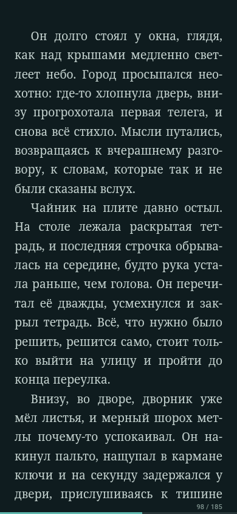
Читалка: режим чтения · 1б
только текст, номер в углу, полоска цели дня
reader-clean-night.png
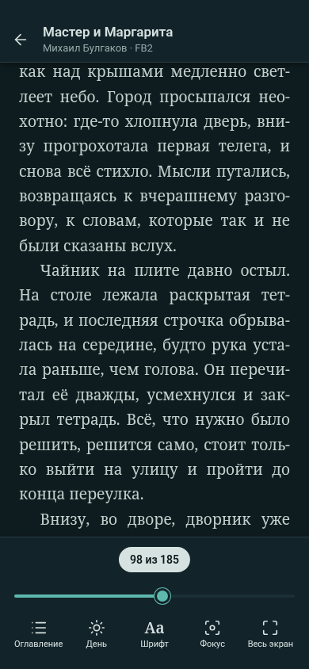
Читалка: панели · 1б
тап в центр: шапка, плашка «98 из 185», слайдер
reader-panels-night.png
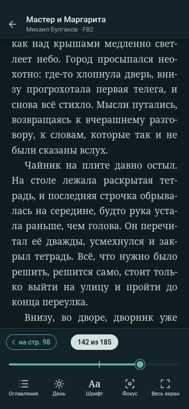
После прыжка слайдером · 1б
«< на стр. 98» и метка на слайдере
reader-jump-night.png
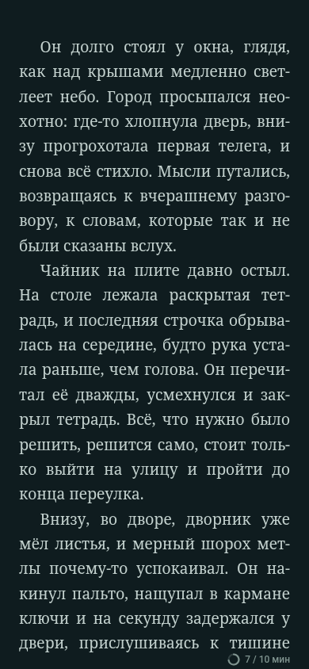
Режим фокуса · 1б
только текст и счётчик «7 / 10 мин» в углу
reader-focus-night.png
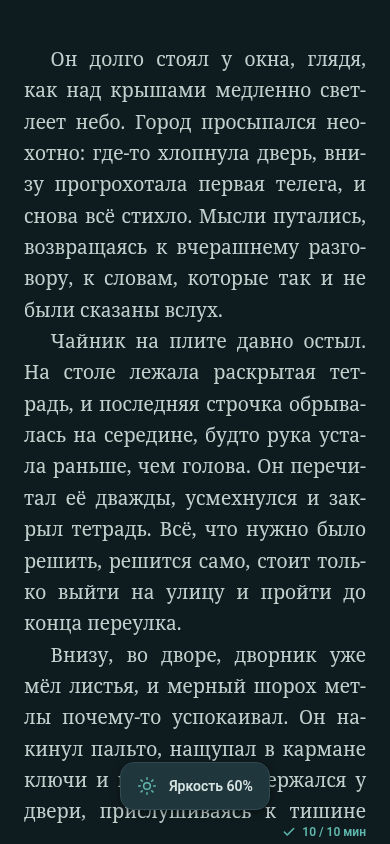
Фокус: цель дня набрана · 1б
«10 / 10 мин» с галочкой; тост info «Яркость 60%»
reader-focus-done-night.png
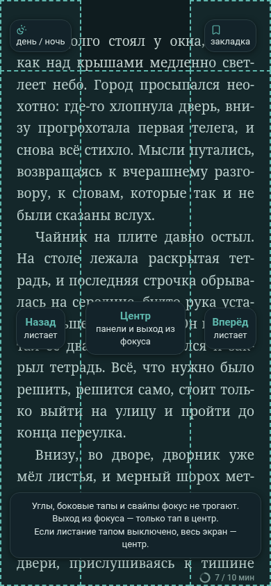
Фокус: зоны тапа · 1б
углы 12 %; ниже 30 % / 40 % / 30 %; выход — только центр
reader-focus-zones-night.png
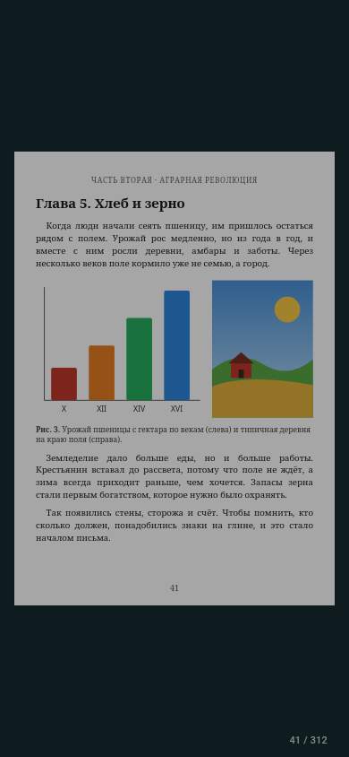
PDF · 1б
ночью затемнение 35 % (по умолчанию), без инверсии
reader-pdf-night.png
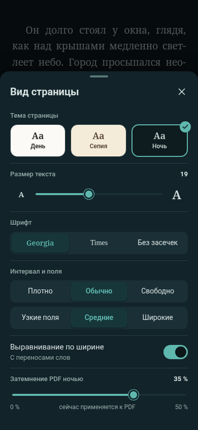
Шторка «Вид страницы» · 1б
тема, размер, шрифт, интервал, поля, затемнение PDF
reader-settings-night.png
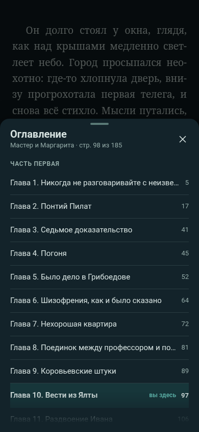
Оглавление · 1б
шторка 72 % высоты, текущая глава отмечена
toc-night.png
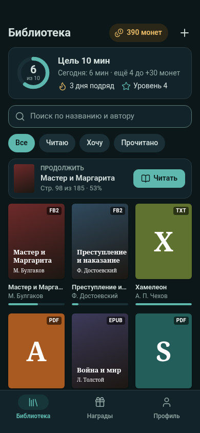
Библиотека · 1в
цель 10 мин без степпера, продолжить, полка
library-night.png
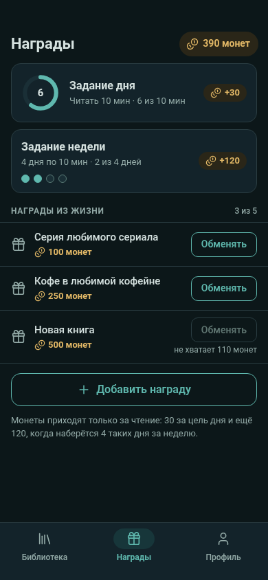
Награды · 1в
задания дня и недели, награды из жизни
rewards-night.png
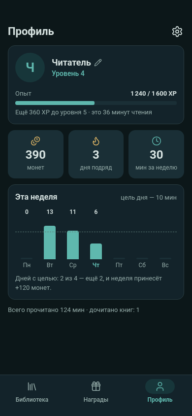
Профиль · 1в
уровень и XP, монеты, стрик, минуты за неделю
profile-night.png
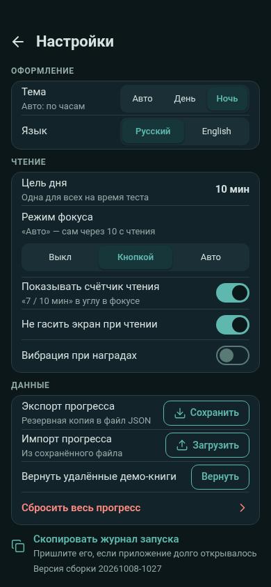
Настройки (MVP) · 1в
режим фокуса и счётчик; данные, журнал, версия
settings-night.png
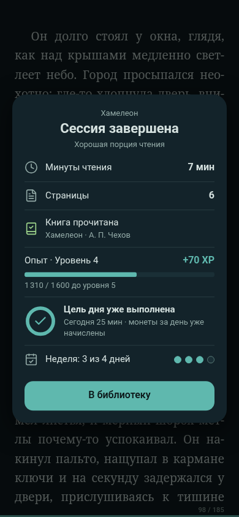
Итог: обычный · 1в
цель уже выполнена; пример строки «Книга прочитана»
summary-regular-night.png
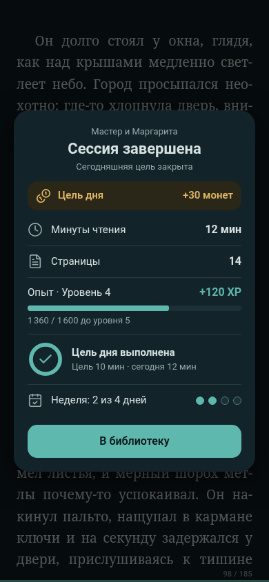
Итог: день выполнен · 1в
+30 монет за цель дня
summary-day-night.png
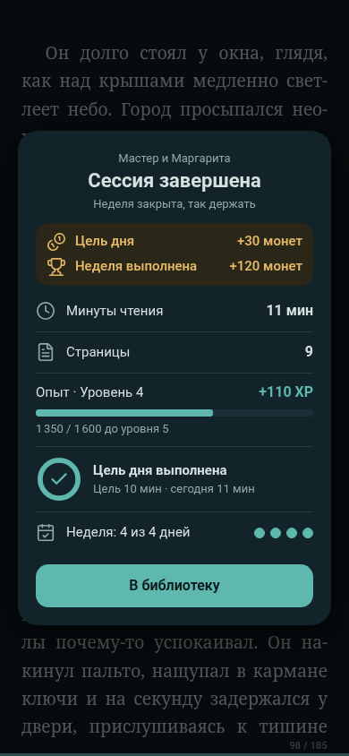
Итог: неделя · 1в
+30 за день и +120 за неделю
summary-week-night.png
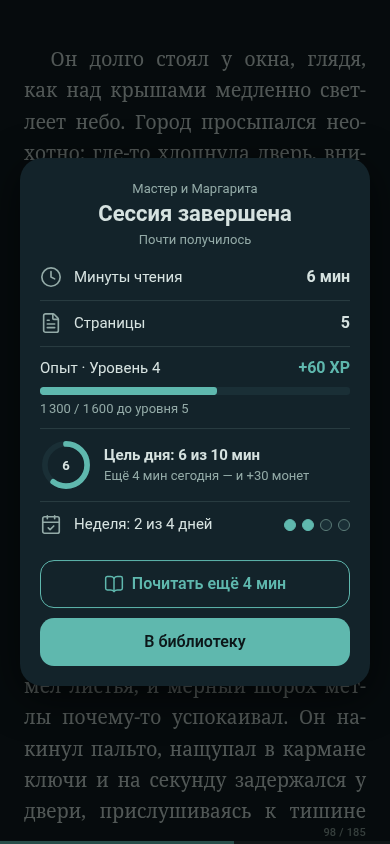
Итог: не дотянул · 1в
ещё 4 мин до цели; «Почитать ещё 4 мин»
summary-missed-night.png
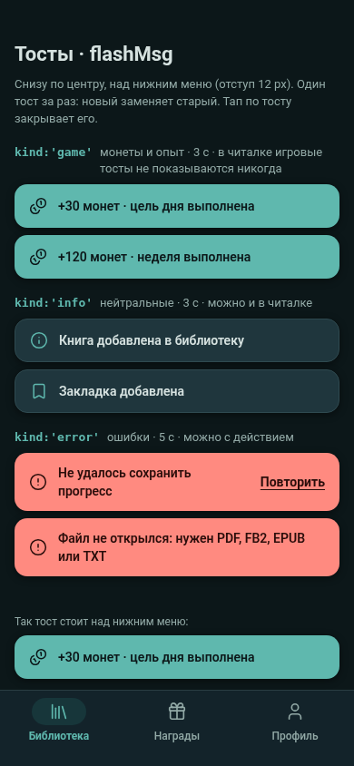
Тосты · 1в
game / info / error для flashMsg
toasts-night.png